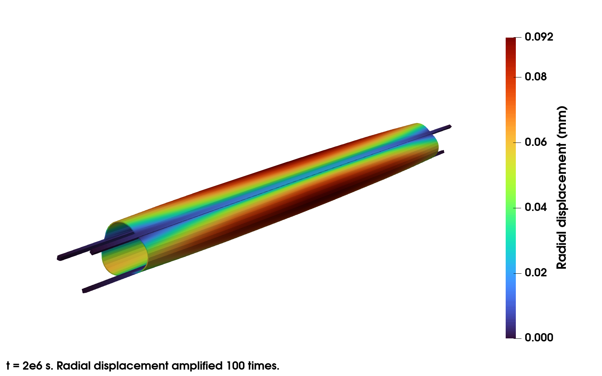
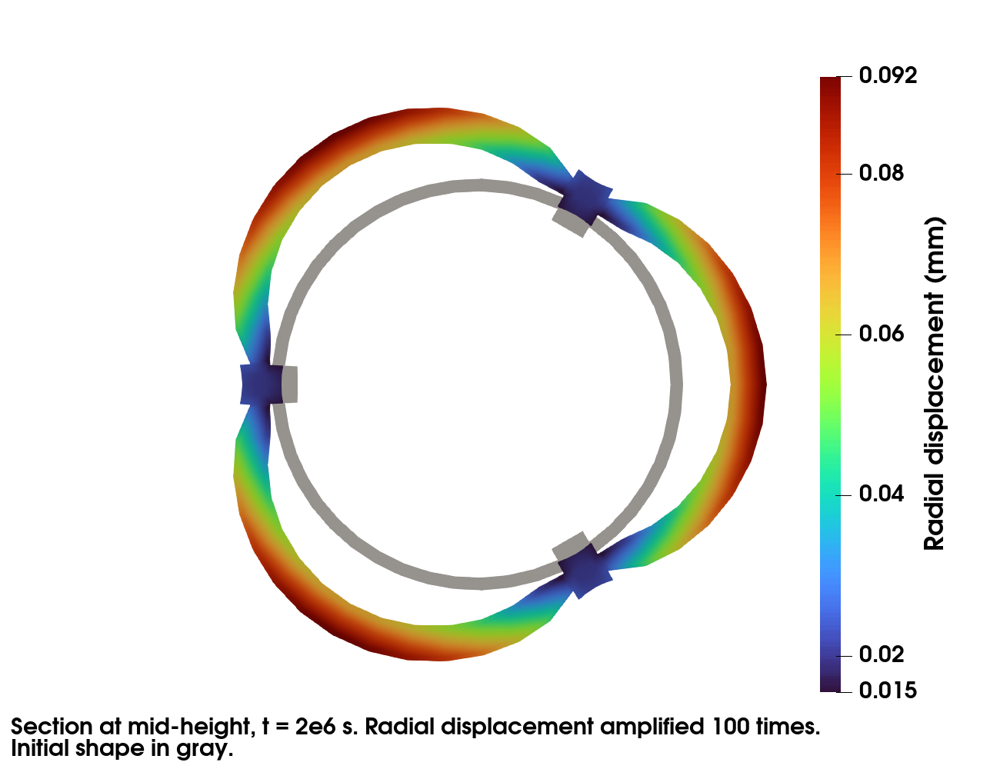

Thermomechanical Simulation of a RJH Plate
website: https://github.com/latug0/mfem-mgis-examples/tree/master/ex8
This example models one ring of a RJH fuel assembly. The fuel is U3Si2. The cladding and the stiffeners are ALFENI.
Two problems are strongly coupled at each time step by an
IterativeCouplingScheme:
a heat transfer problem. The power density in the fuel increases linearly during a ramp, then stays constant.
a mechanical problem at finite strain. It accounts for the thermal expansion, the swelling and the irradiation creep of the fuel, and for the plasticity of ALFENI.
The behaviours are written with MFront. The file MFront/README.md
describes them.
Build the mesh
The default mesh mesh/assemblage_hexa.msh is generated by the gmsh script
mesh/assemblage_hexa.py. It is copied next to the executable at build
time. The script requires the gmsh Python module:
cd mesh
python3 assemblage_hexa.py --output_file assemblage_hexa.msh
The coarser mesh mesh/assemblage_hexa_coarse.msh is generated with:
python3 assemblage_hexa.py --densHaut 5 --densFuelLength 8 --densFuelThick 3 \
--densCladConn 3 --densStifThick 3 --densStifConn 3 \
--output_file assemblage_hexa_coarse.msh
Option |
Description |
Default |
|---|---|---|
|
Number of elements along the height |
10 |
|
Number of elements along the fuel length |
15 |
|
Number of elements across the fuel thickness |
5 |
|
Number of elements across the cladding thickness |
5 |
|
Number of elements across the stiffener thickness |
5 |
|
Number of elements in the stiffener outside the cladding |
5 |
|
Output mesh file |
assemblage_hexa.msh |
Run the simulation
This command runs the default simulation on 2 processes:
mpirun -n 2 ./rjh_plate
The results are exported to Paraview in the Results directory:
paraview Results/Mechanics/Mechanics.pvd
The figures show the results at t = 2e6 s. They are computed with
mpirun -n 4 ./rjh_plate -et 2e6 -ns 20. The radial displacement is
amplified 100 times. The cladding bulges between the stiffeners.


At the end of the simulation, the swelling is compared to its exact value. The end of the power ramp is a time step boundary. The power density is thus linear over each time step, and the swelling model integrates it exactly. The run fails if they differ.
Available options
Command line |
Description |
Default |
|---|---|---|
|
Mesh file |
assemblage_hexa.msh |
|
Material library of the U3Si2 fuel |
src/libU3SI2-generic.so |
|
Material library of the ALFENI cladding and stiffeners |
src/libALFENI-generic.so |
|
Linear solver of the heat transfer problem |
HypreGMRES |
|
Preconditioner of the linear solver of the heat transfer problem |
HypreBoomerAMG |
|
Linear solver of the mechanical problem |
MUMPSSolver |
|
Preconditioner of the linear solver of the mechanical problem |
HypreBoomerAMG |
|
Finite element order |
1 |
|
Number of uniform refinements of the mesh |
0 |
|
Export or not the results to Paraview |
export |
|
Verbosity level of the linear solvers |
0 |
|
Print or not the minimum, maximum and mean values of the temperature, of the norm of the displacement, of the swelling and of the power density at the end of the simulation |
|
|
Reference values of these statistics, one line per field, in the printed format |
no comparison |
|
End time of the simulation |
1e5 |
|
Number of time steps |
1 |
|
Duration of the power ramp. Its end must be a time step boundary. 0 disables the ramp. |
1e5 |
|
Thermal convection coefficient |
5e4 |
|
Coolant pressure on the cladding and the stiffeners |
1e6 |
The iterative solvers are CGSolver, GMRESSolver, BiCGSTABSolver,
MINRESSolver, SLISolver, HyprePCG, HypreGMRES and
HypreFGMRES. The direct solver is MUMPSSolver. It ignores the
preconditioner. The preconditioners are HypreBoomerAMG,
HypreDiagScale, HypreEuclid, HypreILU and HypreParaSails.
Iterative solvers are much slower than MUMPS for the mechanics of this
problem. With the default mesh, the simulation takes 8 s on 2 processes with
MUMPS and 165 s on 4 processes with HyprePCG.
Tests
ctest runs three tests:
rjh_plateruns the simulation on 2 processes. It compares the statistics of the temperature and of the displacement to the reference values. The full test mode uses the default mesh andassemblage_hexa-statistics.ref. The restricted test mode uses the coarser mesh andassemblage_hexa_coarse-statistics.ref.u3si2_swellingcompares the swelling model to its exact value under a power ramp.robin_testcompares the Robin boundary condition to the exact solution of a bar.